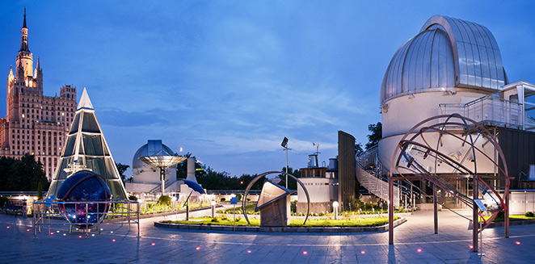
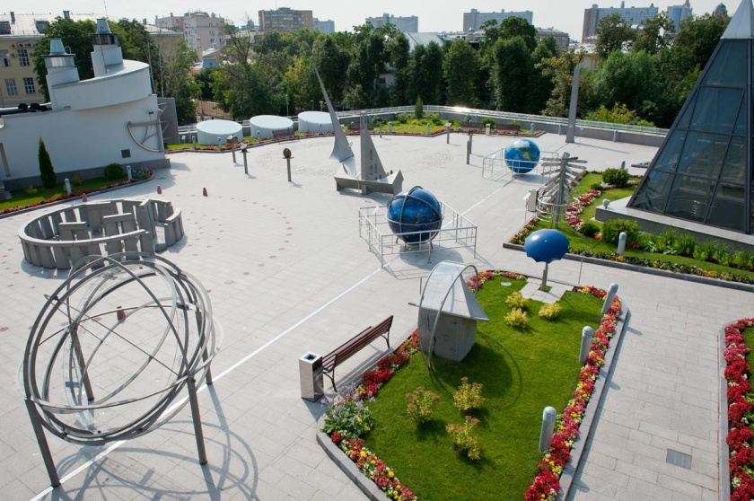

|
Открой для себя целый мир с другой стороны!
|
О ПАРКЕ НЕБА И ЕГО ЭКСПОНАТАХ:
Первый в мире общедоступный Парк неба — собрание древних и новых орудий познания
Вселенной, Наследник семи чудесных городов Урании — Египетской долины царей, Стоунхенджа,
Александрийской обсерватории, Ураниенбурга, Пулкова, Маунт-Паломара, Байконура.
Парк неба это комплекс астрономических приборов и инструментов, соединение астрономической обсерватории и музея
под открытым небом – достопримечательность Московского планетария. Впервые в мире этот уникальный комплекс инструментов познания,
обращенный к живым светилам, был задуман московскими астрономами и сотрудниками Планетария еще в 1939 году.
Решение о строительстве астрономической площадки было принято в 1941 году. Однако Великая Отечественная война разрушила эти планы.
Астрономическая площадка Московского планетария была открыта к 800-летию Москвы в 1947 г. Она продолжала традиции древних звездных обителей,
таких как храмовый комплекс в Гелиополе, Стоунхендж в Англии, обсерватория-музеум в Александрии, Нюренбергский городок Региомонтана, Ураниенборг Тихо Браге,
Пекинская обсерватория, Гданьская обсерватория Яна Гевелия, небесный комплекс Самрат Янтра в Джайпуре.

Посещение Парка неба – предоставляет уникальную возможность в одном месте, в сравнении, в работе увидеть, как человек в процессе своего развития научался использовать свои наблюдения,
опыт, знания в практических целях - определение сторон горизонта, времени, ориентации в пространстве, что было необходимо для жизни, а порой и выживания. Таким образом,
Парк неба позволяет приобрести знания и навыки, которые нигде в другом месте комплексно получить невозможно, а актуальность этих знаний не потеряна и сегодня.

|
|
|
|